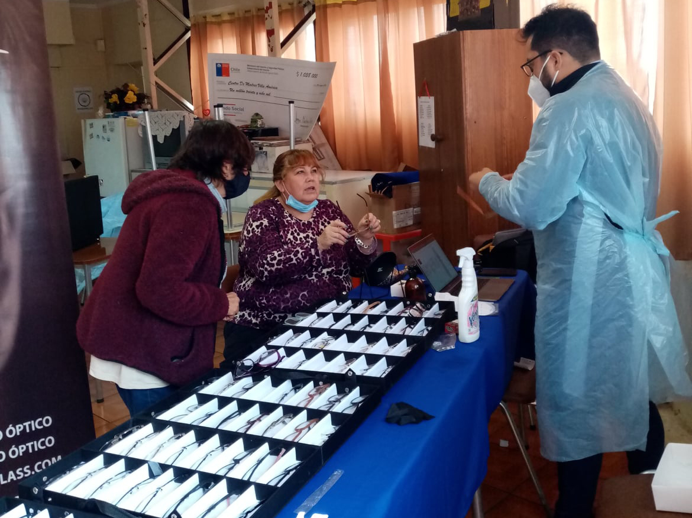

NUESTRO TRABAJO
Somos una organización cuyo foco principal es trabajar en conjunto con organizaciones sociales en temáticas que promuevan acciones sociales fortaleciendo programas e iniciativas enfocadas a niños, jóvenes y adultos mayores, construyendo colaborativamente acciones barriales en comunidad.